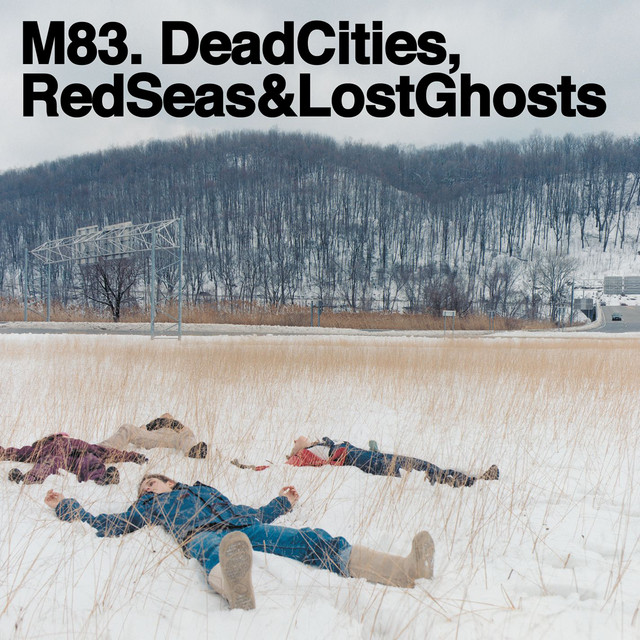

M83 - Dead Cities Red Seas



Información del álbum facilitada por discogs.com:
Fecha de lanzamiento: 2003
Géneros: Electronic, Rock
Estilos: Leftfield, Noise, Shoegaze
Pais: Netherlands
Votos: Media de 3.67 con 6 votos
Sello: Rave Records
Published By: Seashore Music
Pressed By: Europe Optical Disc
Arranged By, Composed By, Written-By - Charly Lownoise
Tracklist:
Birds 0:53
Unrecorded 4:11
Run Into Flowers (feat. Anthony Gonzalez & Nicolas Fromageau & Montag & Cyann & Mélanie Pain & Villeneuve) 4:09
In Church 3:58
America 3:06
On A White Lake, Near A Green Mountain 4:43
Noise (feat. Morgan Daguenet) 3:54
Be Wild 3:19
Cyborg 3:48
0078h (feat. Villeneuve & Cyann & Mélanie Pain) 4:01
Gone 6:07
12.1. Beauties Can Die (feat. Villeneuve & Montag & Cyann & Mélanie Pain & Suzanne Thoma) 9:20
12.2. (silence) 2:00
12.3. Untitled 3:16